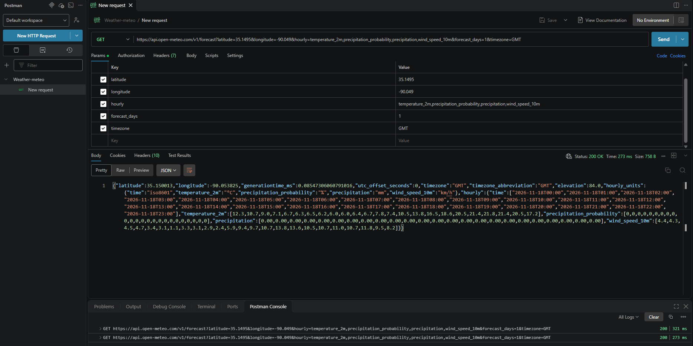
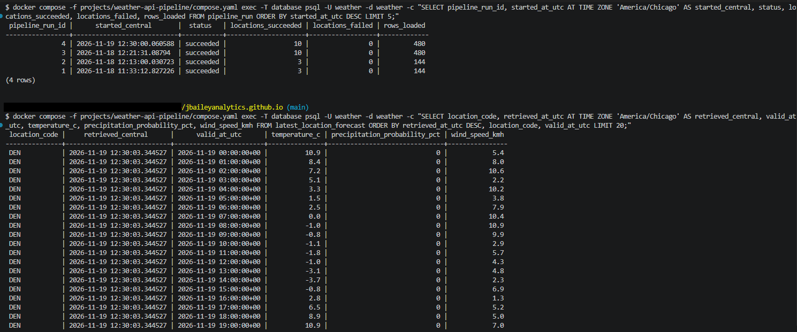
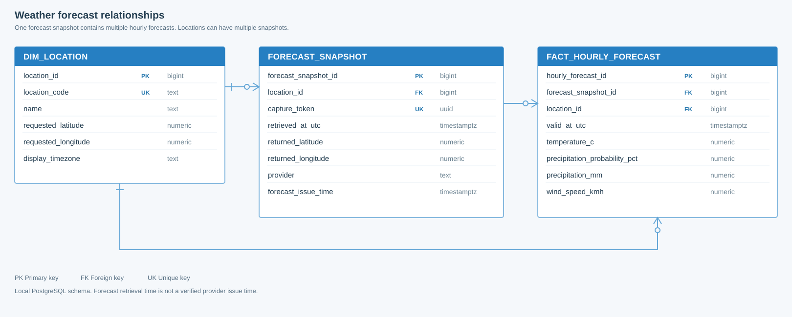

Peak precipitation probability
3 hours at or above 60%
CASE STUDY 01 / DATA ENGINEERING
From changing forecasts to dependable data for a fictional distribution network.
Local implementation / Scheduled ingestionVerified local database run · November 19, 2026
A LOOK AT THE DATA
One retrieved forecast snapshot compared the next 24 available hours across ten locations. The figures below are forecast probabilities, not observed conditions or confirmed disruptions.
Peak precipitation probability
Peak precipitation probability
Peak precipitation probability
Illustrative 60% review threshold · Snapshot retrieved November 18, 2026 at 18:21 UTC · Explore the full results and SQL
THE CHALLENGE
A planning team looking across multiple locations needs a consistent way to collect forecasts and know whether the latest load succeeded. This project uses fictional distribution locations to explore that engineering problem without relying on company data.
Forecast conditions can prompt a review of staffing or deliveries. They do not, by themselves, establish that a delay, disruption, or financial impact occurred.
THE PIPELINE
A daily scheduler starts a Python batch for ten fictional planning locations across the United States, including Memphis, Chicago, Dallas, Atlanta, Louisville, Los Angeles, Newark, Seattle, Miami, and Denver. The pipeline requests hourly forecasts, checks the response structure, units, timestamps, and values, then saves the response and loads the validated snapshot into PostgreSQL. Docker Compose provides the local services.

Python / REST API / PostgreSQL / Docker / Scheduling / SQL
Using Postman in VS Code, I sent a Memphis forecast request and inspected the successful response, including returned coordinates, units, and hourly arrays. This manual request used a one-day forecast; the automated pipeline requests two days.

ENGINEERING DECISIONS
Each acquisition has a capture token and retained response. Replaying the same capture is a no-op; reusing its token for different data is rejected. A later request is a separate snapshot because the forecast may have changed.
The batch records results by location, so a failed request does not hide the locations that succeeded. Run status, counts, and sanitized errors support review.
A PostgreSQL advisory lock prevents a second batch from running at the same time. Skipped overlapping runs are recorded separately.
VERIFIED LOCAL EVIDENCE
Expanded network: A database record shows a successful ten-location run at 12:30 p.m. Central on November 19, 2026, matching the configured daily schedule. It recorded 480 hourly records and no failed locations.
Visual summary of the ten-location run recorded in PostgreSQL. Its start matches the configured schedule; the database record alone does not identify its trigger.
On November 18, 2026, a manual batch loaded 48 hourly records for each location. A separate timer-triggered test against a disposable database also completed for all three locations. Tests covered response validation, retry behavior, database constraints, replay, partial failure and recovery, and overlap protection.
The terminal screenshot shows the November 19 run history and a sample of 20 Denver forecast rows queried from PostgreSQL. The 12:30 p.m. Central start matches the configured schedule; the database output does not establish the trigger on its own.

This query counts the records in each location’s latest retrieved snapshot. The result below shows all ten locations from the expanded manual run. It does not filter to future hours.
SELECT location_code, COUNT(*) AS forecast_hours
FROM latest_location_forecast
GROUP BY location_code
ORDER BY location_code;| Location | Forecast hours |
|---|---|
| ATL | 48 |
| CHI | 48 |
| DEN | 48 |
| DFW | 48 |
| EWR | 48 |
| LAX | 48 |
| MEM | 48 |
| MIA | 48 |
| SDF | 48 |
| SEA | 48 |
For each location, this query selects the next 24 forecast hours in its most recently retrieved snapshot, calculates temperature and weather indicators, and ranks the locations by peak rain probability. Average Fahrenheit is calculated from the unrounded Celsius average, then each is rounded to one decimal. The 60% threshold is an illustrative planning prompt, not a confirmed disruption or an operational alert.
-- Compare the next 24 forecast hours from each location's latest snapshot.
-- Thresholds are illustrative planning prompts, not operational alerts.
WITH next_24_hours AS (
SELECT location_code, name, retrieved_at_utc, valid_at_utc,
temperature_c, precipitation_probability_pct, wind_speed_kmh,
ROW_NUMBER() OVER (PARTITION BY location_code ORDER BY valid_at_utc) AS hour_number
FROM latest_location_forecast
WHERE valid_at_utc >= retrieved_at_utc
), location_outlook AS (
SELECT location_code, name, MAX(retrieved_at_utc) AS retrieved_at_utc,
COUNT(*) AS forecast_hours,
ROUND(AVG(temperature_c)::numeric, 1) AS avg_temp_c,
ROUND((AVG(temperature_c)::numeric * 9 / 5) + 32, 1) AS avg_temp_f,
MAX(precipitation_probability_pct) AS peak_rain_chance_pct,
ROUND(MAX(wind_speed_kmh)::numeric, 1) AS peak_wind_kmh,
COUNT(*) FILTER (WHERE precipitation_probability_pct >= 60) AS hours_rain_chance_60_plus
FROM next_24_hours
WHERE hour_number <= 24
GROUP BY location_code, name
)
SELECT location_code, forecast_hours, avg_temp_c, avg_temp_f, peak_rain_chance_pct,
peak_wind_kmh, hours_rain_chance_60_plus,
DENSE_RANK() OVER (ORDER BY peak_rain_chance_pct DESC NULLS LAST) AS rain_chance_rank
FROM location_outlook
ORDER BY rain_chance_rank, location_code;| Location | Hours | Avg. temp. °C | Avg. temp. °F | Peak rain chance | Peak wind km/h | Hours ≥ 60% | Rain rank |
|---|---|---|---|---|---|---|---|
| LAX | 24 | 16.1 | 60.9 | 100% | 15.6 | 3 | 1 |
| MIA | 24 | 22.9 | 73.1 | 93% | 32.4 | 10 | 2 |
| SEA | 24 | 7.4 | 45.3 | 35% | 16.4 | 0 | 3 |
| ATL | 24 | 13.3 | 55.9 | 4% | 18.8 | 0 | 4 |
| CHI | 24 | 9.1 | 48.4 | 1% | 21.4 | 0 | 5 |
| DFW | 24 | 14.5 | 58.0 | 1% | 9.8 | 0 | 5 |
| DEN | 24 | 5.1 | 41.3 | 0% | 26.3 | 0 | 6 |
| EWR | 24 | 9.7 | 49.5 | 0% | 10.9 | 0 | 6 |
| MEM | 24 | 13.6 | 56.5 | 0% | 13.0 | 0 | 6 |
| SDF | 24 | 8.1 | 46.5 | 0% | 7.1 | 0 | 6 |
In this snapshot, Los Angeles and Miami had the highest peak rain probabilities, with three and ten hours respectively at or above the illustrative 60% threshold. The result is a point-in-time forecast comparison; it is not evidence of actual conditions or business impact. Results change with later snapshots.
Weather data by Open-Meteo, CC BY 4.0; forecast records were validated, stored, and aggregated into counts.
These are verification results from a local example, not production throughput, forecast accuracy, or business impact.
DATA MODEL
The model separates the planning location from each retrieved snapshot and its hourly forecasts. Requested and returned grid coordinates are retained separately. Retrieval time is not presented as a verified forecast issue time.

SCOPE AND SOURCE
The implementation runs locally and depends on Docker Desktop and the computer being available. It does not provide external alerts, automatic backfill, a retention policy, or a cloud deployment. An earlier timer test verified scheduled execution for the original three locations. The November 19 database record shows a successful ten-location run at the configured time but does not identify the trigger. The daily schedule remains dependent on the local environment.
Weather data is supplied by Open-Meteo. Forecasts are model estimates, not direct station observations. See the provider’s terms and attribution requirements.
The source code and reproducible setup are being prepared for public sharing. No local credentials or saved captures are included in the public materials.
CONTACT
I’m interested in opportunities across data engineering, cloud infrastructure, and analytics.